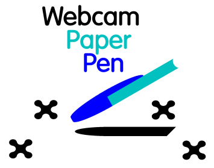
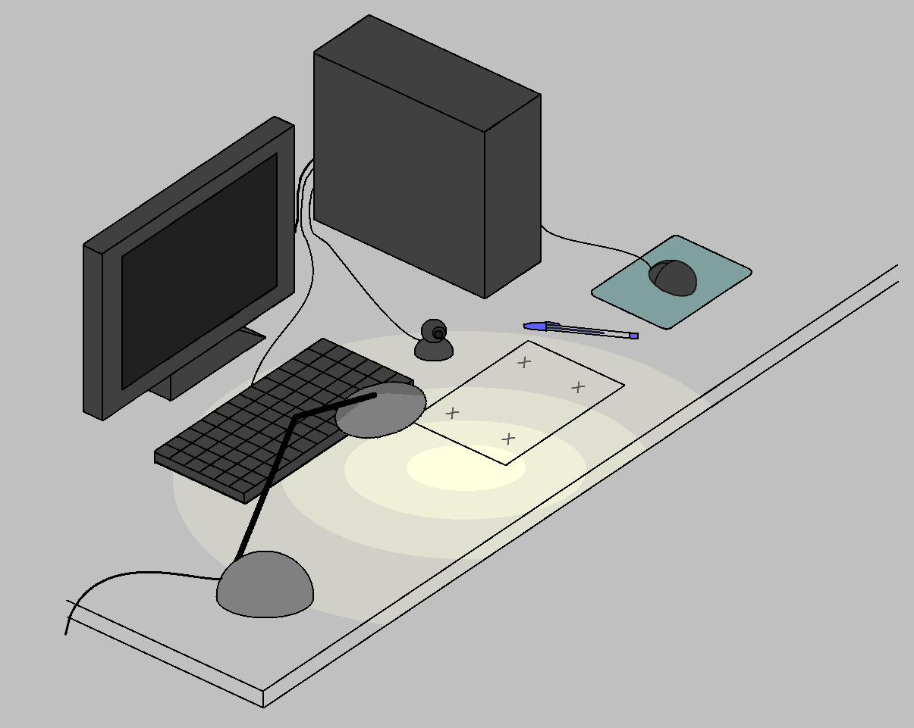

(ENGLISH | PORTUGUÊS)

WebcamPaperPen

WebcamPaperPen (WPP) is a computer vision software created to control the computer mouse using a blue-capped pen just like the BIC pen, in a similar fashion to a graphics tablet.
You will only need:
1) a sheet of paper
2) a pen with a blue cap
3) a movable webcam
4) a desk lamp

WebcamPaperPen was Gustavo Pfeiffer's graduation project in Computer Engineering, developed at LCG-UFRJ between 2013 and 2014. It was also presented at SIBGRAPI 2014 (article, presentation, video, suppl. material).
Download
Windows Version
Download - Latest version (2015-03-17).
Before trying WPP, don't forget to read the setup instructions.
Linux (Ubuntu) Version
To install our software in Linux, you may download and compile our source code (see Source Code section, below).
Setup Instructions and Troubleshooting
Download
Source Code
https://github.com/guthpf/WPP
To compile in Windows, you will need:
To compile in Linux (Ubuntu), you will need:
- Qt4 and QtCreator (apt-get install libqt4-dev qtcreator)
- Eigen (apt-get install libeigen3-dev)
- OpenCV (apt-get install libopencv-dev)